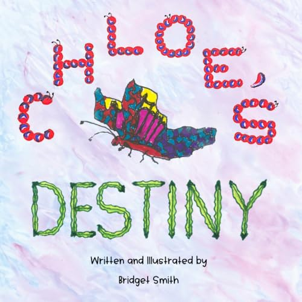
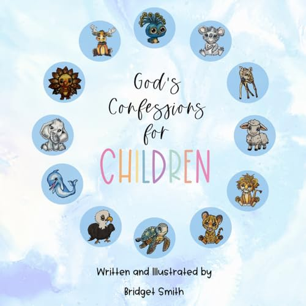

Little readers.
Big possibilities.
Open a book. Spark a little wonder. Help a child discover the courage, kindness, and God-given gifts already inside them.


Full of wonder.
Small books.
Something big inside.
From counting to courage, every story opens a different door. Find the one that meets your little reader right where they are.
Gifted.
Capable.
Words they can
grow into.
“Who am I?” “Where do I fit?” “Can I really do this?” Little hearts ask big questions.
Bridget's stories bring faith, learning, and character together—giving families a gentle place to start those conversations.
The heart behind the books ↗Let the story keep going.
Read it. Sing it.
Remember it.
Companion songs and simple activities for storytime, classrooms, and everyday moments.
Explore songs & activities ↗Big truths.
Bright reminders.
Meet the Scripture Flag characters and bring a reminder of faith into a child's day.
Discover Scripture Flags ↗Bring a little wonder
to your community.
School visits, church gatherings, book signings, or a thoughtful idea of your own. Start a conversation with Bridget.
Let's talk ↗